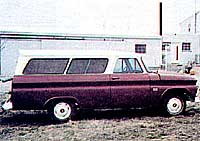
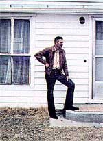
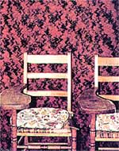

For-Free (Nearly) House
January/February 1982
Issue # 73- January/February 1982
On a tip from reader Franklin Beatty, we sent Randy Kidd out to have a look at...
Randy Kidd
John Olberding is definitely a man who's taken the Johnny Cash song "One Piece at a Time" to heart. For several years, John watched-from his vantage point in a nearby pizza parlor-truckload after truckload of perfectly usable goods being carted to the county landfill. And one day he decided to see if he could turn a few of those "treasures" his way.
To do so, Olberding got himself a job at the dump, and quickly gained permission to take home whatever he could use ... as long as he didn't attempt to make a profit from his windfalls. So, one piece at a time, John loaded the throwaways into the rear of an old red van, hauled the stash to an empty lot for storage, and-when he had accumulated enough free material-began building his dream house.
With the help of a few out-of-pocket bucks (the scavenger tells most folks that he's spent "about $1,000", but admits that the actual figure is probably closer to $700), John built a three-bedroom, one-and-a-half bath, 24' X 96' (24' X 32' upstairs), two-story home ... complete with a three-car garage, an enclosed breezeway, and a basement. And he had enough leftover "freebies" to furnish the interior of the dwelling!
John's house is no thrown-together shamble of shingles, either. The structure is entirely sided in metal coated with white, baked-on enamel . . . "excess" material that a local contractor saw fit to pitch out in large quantities. And the building is assembled like a fortress. Olberding framed his dream house in 3 X 6's, instead of the normal 2 X 4's, and then he put the boards on 12"-rather than the standard 16" or 24"-centers. Furthermore, since people didn't seem to care what kind of wood they were throwing out, some of John's framing was done with oak. Even the garage is as solid as the proverbial rock: 3 X 14 and 3 X 16 beams brace the front, and the ceiling is made up of 2 X 6's and 2 X 8's ... all lumber that the scrounger thought he should use simply "because it was there".
"There's at least four inches of insulation stuffed into every open space I could find," John says. "The wood, the insulation, and the metal siding were among the easiest materials to get, so I didn't skimp on them." In fact, those three items were so plentiful in Olberding's "ware-heap" that a couple of his neighbors have built two-story houses (on the same theme as John's) using the leftover leftovers !
The list of his free-for-the-carting housing materials doesn't stop at the front door, either (by the way, that portal is a solid oak throwaway that John fitted with a tossed-out antique knob). All the doors, windows, bathroom fixtures, appliances, living room furniture, cabinet doors, and even a walk-in refrigerator for meat storage made their way in the back of the red van from the landfill to Olberding's residence.
Some castoff items were available in such steady supply that John actually had to dream up ways to use them. For example, most of his floors are two layers deep in carpet-which makes a walk through his "trash house" feel like a stroll across a well-sodded golf course-and even then, there was enough rug material left over to cover some walls and hand rails. Finally, when John could think of nowhere else to use the versatile carpeting, he simply traded his surplus for a complete bedroom suite.
Of course, even though some items were thrown away in prodigious quantities, others were a little scarce. John had a great many white ceiling tiles, for example, but they weren't all the same style. So he simply mixed the different tiles to create a patterned effect. The basement blocks also have a unique appearance: They're a mixture of bright orange and concrete gray. When questioned about the curious combination, John explained that the brightly colored building blocks had come from a torn-down A & W Root Beer stand.
The list of landfill windfalls goes on and on. John muses that people often throw things out for virtually no reason at all. His refrigerator, as an example, has a small scratch on its side . . . but its innards work just fine.
One gent carted a rototiller to the dump that looked OK to our landfill lookout. When John asked, the man explained that he'd had to gas a hornet's nest from under the tiller the previous fall, and when he started the engine up in the spring, it caught fire. Olberding replaced the burned spark-plug wire, and the tiller has faithfully turned his garden ever since. In another instance a lady informed the scrounger that she didn't think there was anything much wrong with the clock she was throwing out. Sure enough, John replaced the battery, and the timepiece has run "like clockwork" on his kitchen wall for the last three years.
As you might expect, Olberding has seen some interesting human dramas during his stint at the landfill. One time a young man backed up to the dump site in a pickup-spewing gravel from beneath the wheels-and furiously heaved out a load that included a stove, a dresser, and a large selection of women's clothing. Later that week yet another rapidly driven pickup arrived, this time with an angry lady at the wheel. She hurled out a collection of guns, fishing poles, and men's clothing. Now whenever something of this sort occurs, the landfill employees try to pick up the discards and store them in a warehouse in case there's a change of mind on the part of the people discarding the valuable merchandise. But in this case, neither party returned ... not even after the divorce was final.
John Olberding's unconventional approach to housing design didn't stop with his method of obtaining building materials. He's also put together some pretty nifty recycled equipment for taking advanrage of alternative energy sources. John's furnace, for instance, is set up to use solar energy, electricity, wood, or fuel oil ... depending on which one happens to be the easiest and least expensive to acquire at the time. Furthermore, the trash-can tinkerer has built a panemone wind machine that keeps his tank of bait fish well aerated during the angling season.
Of course, you don't build a house from toss-outs without having a good bit of ingenuity ... and John has demonstrated his ability to see a treasure in another penson's trash. What's more, we all know that erecting a dwelling calls for a lot of sweat-of-the-brow effort. John spent six and a half years-nights, weekends, and vacations-building his house ... but the result is, he feels, well worth the effort expended.
Olberding says that he had the house appraised at around $60,000 a few years back ... so he's obviously been well compensated for his work. But the biggest reward, in John's mind, is the personal satisfaction he's gained. "You know," he told me, "I'm pretty proud of myself. There's been a great deal of unexpected interest in this project, and I feel pretty darn good about that.
"Now," John continued, "if I could just get folks to realize how crazy it is to throw out all this perfectly usable material-and if I could convince landfill operators that people who want this 'junk' should be allowed to use it-I'd be happy."
EDITOR'S NOTE: Though many people are under the impression that Environmental Protection Agency regulations prohibit the removal of all materials from sanitary landfills, federal law is concerned only with items classified as hazardous waste. In most regions, landfill salvage is prohibited on the state or local level... because of the threat of liability from injuries to individuals removing material from a dump. It's frequently possible, however, to make an arrangement with the landfill operator to salvage useful materials. So speak to the person who runs your local landfill, and see it you can help him or her stem the tide of waste.
 In the foreground, John's ""wareheap"" is guarded by his homemade wind machine. In the bacground is the house that public profligacy (and one man's ingenuity and industry) built. |
 The van that hauled the goods. |
 John Olberding at the stoop of his less-than- $1,000 home. |
 The clock, the range, the refrigerator/freezer, the table, and even the chairs came from the country landfill. |
 What do you do with more carpet than you need? Cover the walls. |
|